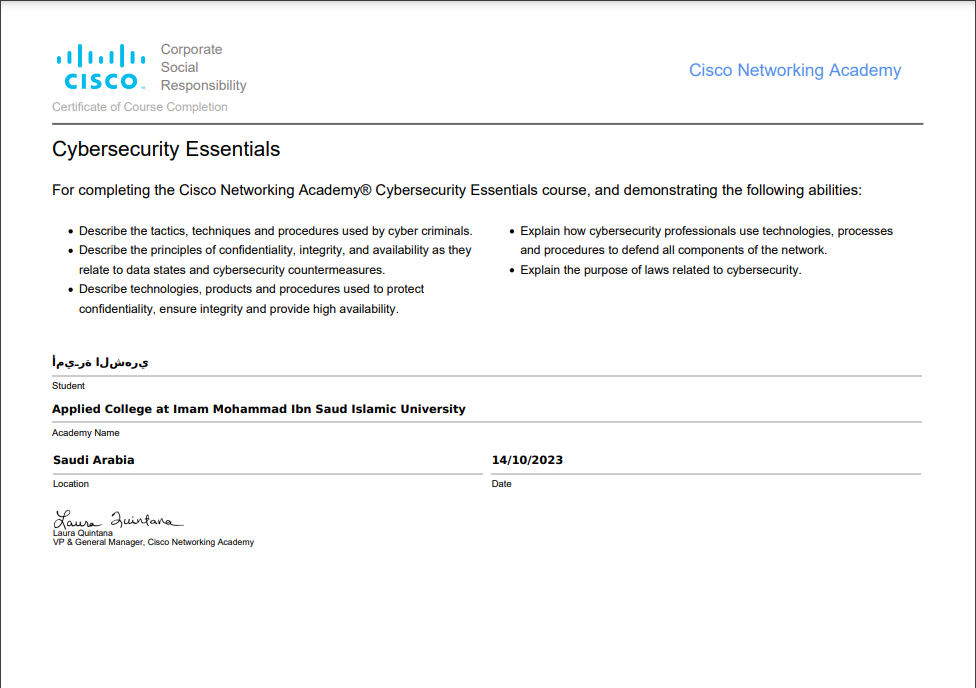
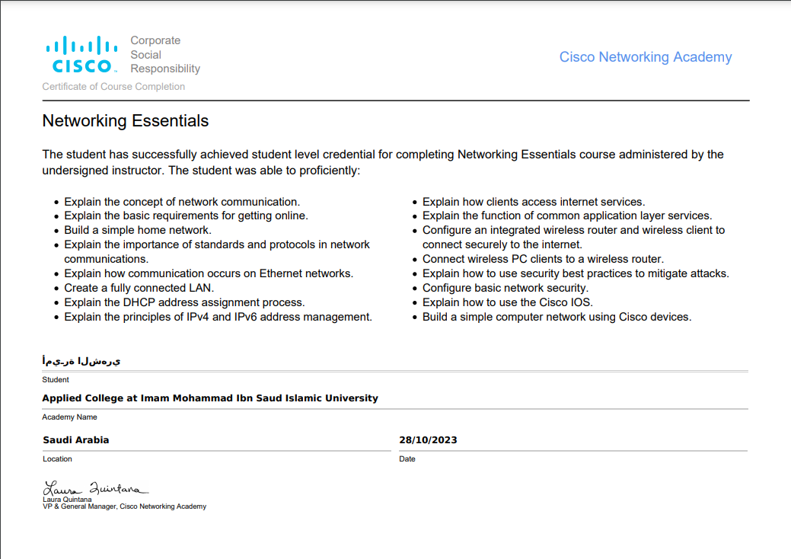

As shown in the attached images, I have successfully completed two training courses offered by Cisco:
Cybersecurity Essentials Course: This course provides an introduction to the fundamental concepts of protecting systems and networks from cyber threats. It covers the importance of cybersecurity in safeguarding information and addresses various types of threats.
Networking Essentials Course: This course provides an introduction to the fundamental concepts of computer networking and how devices integrate to transmit data. It covers different types of networks such as (LAN) and (WAN), along with basic protocols like TCP/IP used for data exchange between devices.

